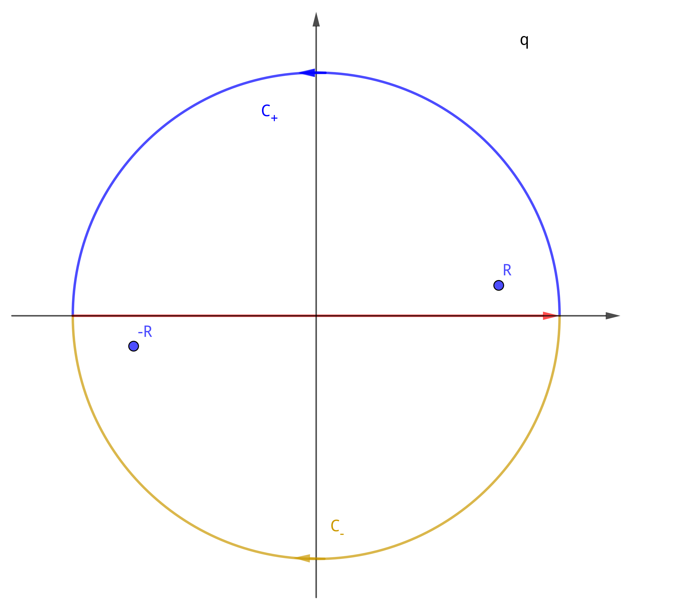

围道积分进阶
Table of Contents
1. 准备
1.1. High Order Residue
Cauchy Integral Formula
\begin{align} f(z) = \frac{1}{2\pi \mathrm{i}} \oint_C \frac{f(\xi)}{\xi - z} \mathrm{d}\xi \end{align}求 \(n\) 阶导数
\begin{align} f^{(n)}(z) = \frac{\mathrm{d}^n f}{\mathrm{d} z^n} = \frac{n!}{2\pi \mathrm{i}} \oint_C \frac{f(\xi)}{(\xi - z)^{n+1}} \mathrm{d}\xi \end{align}1.2. 复数的方根
对于 \(z = re^{\mathrm{i}\phi}\)
\begin{align} z^{ \frac{1}{n} } = r^{\frac{1}{n}} e^{\mathrm{i} \left(\frac{\theta_0}{n} + k \frac{2\pi}{n}\right)} \end{align}也就是有 \(n\) 个方根, \(k = 0, 1, \cdots , n-1\)
2. Contour Integral I
\begin{align}
I_1 =&\int \frac{\mathrm{d}^3q}{(2 \pi)^3} \frac{1}{(q^2 - p^2 - \mathrm{i}\epsilon)^2} \\
= & \frac{4\pi}{(2\pi)^3}\int_0^{\infty} \mathrm{d}q \frac{q^2}{(q^2 - p^2 - \mathrm{i}\epsilon)^2}
\end{align}
它有两个二阶奇点 \(R\) 和 \(-R\) , 并且是偶函数.
 它在远处是 \(\frac{1}{q^2} \to 0\) , 所以采用图中的围道. 只要计算 \(z = R\) 处的留数即
可.
它在远处是 \(\frac{1}{q^2} \to 0\) , 所以采用图中的围道. 只要计算 \(z = R\) 处的留数即
可.
最后一个等号取了 \(\epsilon \to 0\) .
3. Contour Integral II
\begin{align}
I_2 =& \int \frac{\mathrm{d}^3q}{(2\pi)^3}
\frac{e^{\mathrm{i}\vec{q}\cdot \vec{r}}}{(q^2 - p^2 - \mathrm{i}\epsilon)^2} \\
=& \frac{2\pi}{(2\pi)^3}\frac{1}{\mathrm{i}r} \int_0^{\infty}\mathrm{d}q
\frac{q (e^{\mathrm{i}qr} - e^{-\mathrm{i}qr})}{(q^2 - p^2 - \mathrm{i}\epsilon)^2}
\end{align}
与 \(I_1\) 类似, 也是一个偶函数, 有两个二阶 pole. 不同之处在于, 它在无穷远处的积分 为零需要由 Jordan's Lemma 来判定.
\begin{align} I_2 =& \frac{2\pi}{(2\pi)^3}\frac{1}{\mathrm{i}r} \frac{1}{2} \left[\int_{-\infty}^{\infty}\mathrm{d}q \frac{q e^{\mathrm{i}qr} }{(q^2 - p^2 - \mathrm{i}\epsilon)^2} + \int_{-\infty}^{\infty}\mathrm{d}q \frac{-q e^{\mathrm{-i}qr} }{(q^2 - p^2 - \mathrm{i}\epsilon)^2} \right] \end{align} 根据 Jordan's Lemma, 第一项在上半平面无穷远的圆弧上积分为为, 第二项是下半平面, 因此取不同的围道计算两个积分.
第一项
\begin{align} &\int_{-\infty}^{\infty}\mathrm{d}q \frac{q e^{\mathrm{i}qr} }{(q^2 - p^2 - \mathrm{i}\epsilon)^2} \\ = &\oint_{C_+}\mathrm{d}q \frac{q e^{\mathrm{i}qr} }{(q^2 - p^2 - \mathrm{i}\epsilon)^2} \\ = &2\pi \mathrm{i} \lim_{q\to R}\left\{ \frac{\mathrm{d}}{\mathrm{d}q}\left[ \frac{q e^{\mathrm{i}qr }(q - R)^2 }{(q - R)^2(q + R)^2} \right] \right\} \\ = & 2\pi \mathrm{i} \frac{i r e^{\mathrm{i}Rr}}{4R} \end{align}第二项 (注意此围道绕向为顺时针)
\begin{align} &\int_{-\infty}^{\infty}\mathrm{d}q \frac{- q e^{-\mathrm{i}qr} }{(q^2 - p^2 - \mathrm{i}\epsilon)^2} \\ = &-\oint_{C_-}\mathrm{d}q \frac{-q e^{-\mathrm{i}qr} }{(q^2 - p^2 - \mathrm{i}\epsilon)^2} \\ = &2\pi \mathrm{i} \lim_{q\to -R}\left\{ \frac{\mathrm{d}}{\mathrm{d}q}\left[ \frac{ q e^{-\mathrm{i}qr }(q + R)^2 }{(q - R)^2(q + R)^2} \right] \right\} \\ = & 2\pi \mathrm{i} \frac{i r e^{\mathrm{i}Rr}}{4R} \end{align}取 \(\epsilon \to 0, \Rightarrow R \to p\) , 得
\begin{align} I_2 =& \frac{2\pi}{(2\pi)^3}\frac{1}{\mathrm{i}r} \frac{1}{2} \times \left(2\pi \mathrm{i} \frac{i r e^{\mathrm{i}Rr}}{4R} + 2\pi \mathrm{i} \frac{i r e^{\mathrm{i}Rr}}{4R} \right) \\ =& \frac{\mathrm{i} e^{\mathrm{i} p r}}{8\pi p} \end{align}4. Reference
- PhysRevA.78.053606, Eqn A13(b), A14(b)